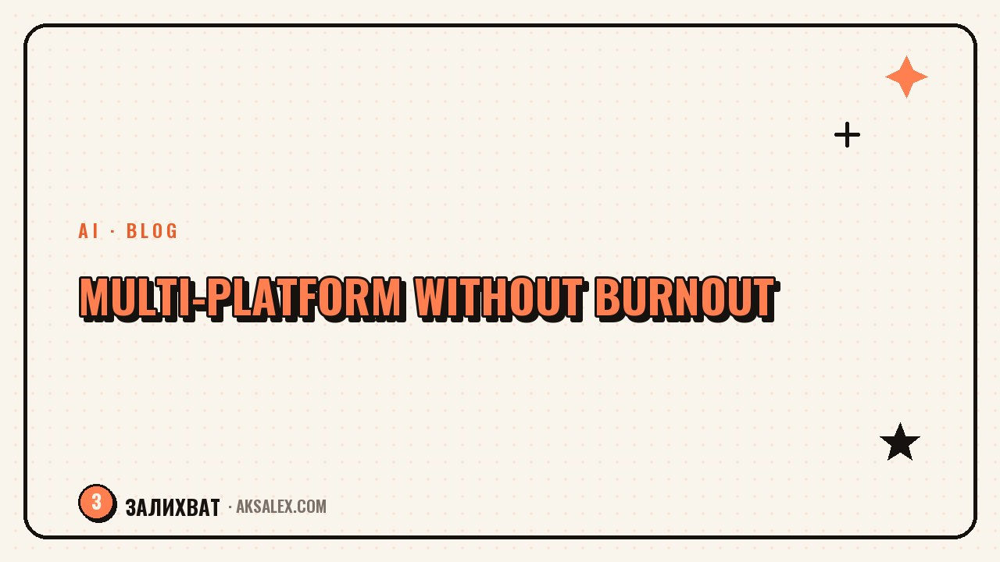

How to Run Several Social Networks Without Burning Out

Why Several Social Networks Burn You Out
Burnout doesn't come from the number of platforms but from trying to run each one from scratch. Five unique feeds are five blogs, and no amount of energy is enough for that. At some point you start to hate content and abandon everything at once.
The reason is the wrong model. You're trying to scale your effort when what you need to scale is one piece of content. One idea should work across all platforms in adapted form, not be born anew for each.
People don't burn out from the number of networks but from running each one as a separate blog. The secret is a single core.
One Core - Everything Else Is Adaptation
Pick one main platform - the one where your audience is and where you feel comfortable. It sets the rhythm and the content. Everything you do there is then adapted for the rest, not created separately.
How to Assign Roles
- Main platform: your energy and original content go here.
- Satellite platforms: they get adapted versions.
- Experimental ones: you test without commitment, if you have the energy.
- Frozen ones: you honestly put them on pause instead of forcing yourself through them.
Better to run two platforms well than five so-so. If you don't have the energy for five, honestly freeze the extras. An empty feed with a note about a pause looks better than an abandoned one whose last post is six months old.
Repurposing Instead of New Work
One piece of material easily turns into formats for different platforms. A video becomes a post and a carousel, a long text becomes a series of short ones. You're not inventing something new, you're repackaging what's ready to fit each network's tone and format.
| Platform | Main format | What to adapt |
|---|---|---|
| Reels / short video | Vertical video | The hook and the pacing |
| Text-based feed | Post, carousel | Length and depth |
| Messenger channel | Short text, a single thought | Tone, brevity |
| Video platform | A longer video | A more detailed delivery |
Adaptation isn't copy-paste. Blindly duplicating one text everywhere cuts your reach, because the format and audience are different. Change the delivery to fit the platform while keeping one idea at the core.
What to Automate and What Not To
Sensible automation takes the load off. Publishing ready content can be put on a scheduler or a queue so you're not stuck with your phone at the exact minute. But communication can't be automated - it's what holds trust together.
- Automate: the publishing schedule, cross-posting with adaptation.
- Do yourself: replies in comments and DMs, reacting to trends.
- Batch: prepare content in one go once a week instead of daily.
- Scheduler: lay out the week across platforms in one evening.
The combo of batching plus a scheduler plus repurposing removes most of the routine. You spend your energy on creating once, and your presence on the platforms then runs on schedule.
Signs It's Time to Slow Down
Burnout creeps up unnoticed. The first signals are content that irritates you, publishing that keeps getting postponed, every post that takes real effort. Don't ignore them: it's not laziness but a system overload that demands a rethink.
When you feel these signs, narrow your front. Keep one or two platforms, go back to the single-core system, give yourself a break. A blog is a marathon, not a sprint: a steady pace on two platforms for years beats a sprint on five and total burnout in a month.
Frequently Asked Questions
How many social networks can one person realistically run?
Comfortably, one main platform and one or two satellites on adaptation. Five unique feeds almost always lead to burnout. Better to run two well than five so-so.
How do I run several platforms and not burn out?
Pick one core that sets the content and fill the rest with adapted versions. Prepare content in a batch and put publishing on autoposting - the effort goes into creating once.
Can I post the same text everywhere?
Blind duplication cuts reach - the format and audience differ across platforms. Keep one idea but adapt the delivery, length, and tone to each network.
What should I do with a platform I don't have the energy for?
Honestly freeze it with a pause note instead of forcing yourself. An empty feed with a note about a break looks better than an abandoned one whose last post is six months old.
How do I know I'm on the edge of burnout?
The signals: content irritates you, publishing gets postponed, every post takes real effort. That's overload, not laziness. Cut the number of platforms and go back to the single-core system.
Enjoyed this one? Here's what to read next. How to show expertise in your content not by talking about yourself, but by breaking down tasks, cases, and mistakes.
Read the article →not by hand